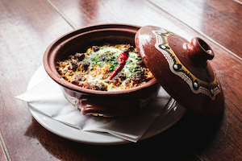
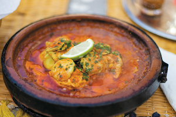

Egg Tajine -- 45DH
Egg Tajine with Tomato Sauce is a clasic Moroccan dish. Eggs are poached in a spiced tomato sauce with garlic and olive oil.Simple warm and eaten with fresh bread.
FRIDAY -10%.png)
Couscous -- 99DH
Couscous is a traditional Moroccan dish. Steamed semolina is topped with slow cooked seasonal vegetables. Light flavorful and served hot.
FRIDAY -10%

Chicken Tajine -- 79DH
Chicken Tajine is a classic Moroccan dish. checken is slow cooked with spices vegetables and sometimes fruit. Tender aromatic and served warm.
FRIDAY -10%